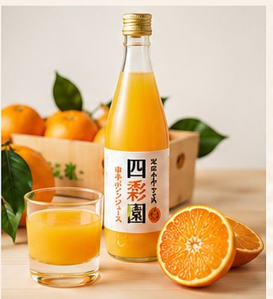
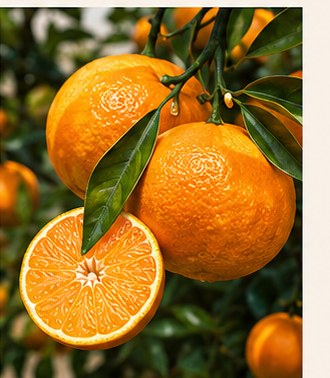
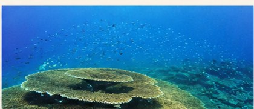
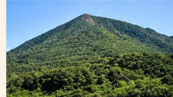
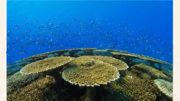
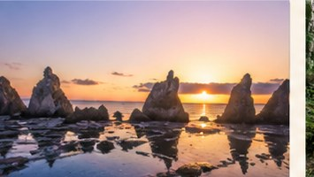
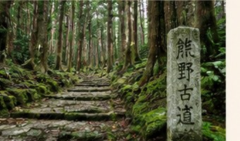

01
本州最南端の太陽
串本町は年間を通じて温暖。燦々と降り注ぐ太陽のもとで育ったポンカンは糖度12度以上。深い甘みとスッキリした後味を生みだします。
四季彩園
SHIKISAIEN
本州最南端の串本町。燦々と降り注ぐ太陽と黒潮が育む温暖な気候のなか、四季彩園は代々ポンカン栽培を続けています。
 串本町姫
串本町姫
約50a（5,000㎡）の農園で、量より質を大切に。一つひとつ手をかけて育てるために、栽培できる量には限りがあります。

「おいしい」には終わりがありません。収穫のたびに自分たちで食べて味を確かめ、毎年少しずつ理想に近づいていく。それが四季彩園の農業です。
家族が食べるものと同じものをお届けしたい。だから農薬も化学肥料も使わない。安心して食べてもらえることが、一番のこだわりです。
本州最南端のまち串本で育ったポンカン。この土地の豊かさを、一口のおいしさとして全国に届けたいと思っています。
甘いだけではない、絶妙な糖酸バランス。雑味がなく、スッキリとした後味——それが四季彩園のポンカンです。土づくりから収穫まで、おいしいと向き合い続けることがわたしたちの農園の姿勢です。


串本町は年間を通じて温暖。燦々と降り注ぐ太陽のもとで育ったポンカンは糖度12度以上。深い甘みとスッキリした後味を生みだします。
糖度12度以上でありながら、甘さと酸味が絶妙にバランス。雑味がなくスッキリとした後味で、ついついたくさん食べてしまうと好評です。
選果機は使わず、ひとつひとつ手に持って見て、触れて、重さを感じながら選別。予措（追熟）をせず収穫後すぐ出荷するから、フレッシュでジューシーなポンカン本来のおいしさが届きます。
有機率100％の有機肥料・自作有機堆肥を使用。イセエビガラ、卵ガラ、ヌカ、モミガラなど約10種類の素材から作る堆肥で、土の力からおいしさを育てています。
収穫のたびに自分たちで食べて味を確かめる。
おいしいを守るために、妥協しない。
それが四季彩園の
ポンカンづくりです。
四季彩園のポンカンは、さまざまな形でお楽しみいただけます。ご注文・お問い合わせはお電話またはメールにて承っております。
🍊
厳選した完熟ポンカンをそのまま。フレッシュでジューシーな食感をお楽しみください。
🧃
収穫後すぐに搾った100%ストレートジュース。無添加でポンカンそのままの味わいです。
🫙
ポンカンの風味をそのままに閉じ込めた、なめらかなジュレ。贈り物にも喜ばれています。
🫙
皮も果肉も丸ごと使った、香り豊かなジャム。トーストやヨーグルトに。
🎁
大切な方への贈り物に。季節の詰め合わせセットをご用意しています。
私たちが大切に育てたポンカンを通じて、串本町の豊かな自然や風土にも興味を持っていただけたら嬉しいです。このまちの魅力を、少しでもお届けできればと思っています。
弘法大師ゆかりの重畳山のふもとに位置する串本町。黒潮おどる太平洋に面したこの地で、四季彩園は代々ポンカン栽培を続けています。わたしたちは、ポンカンを通じて串本の魅力を全国に伝えることを目指しています。
日本最大のテーブルサンゴ

串本海中公園は日本最大のテーブルサンゴが広がる国内有数のダイビングスポット。透き通った海の美しさは格別です。
天然記念物

海の中に大小40余りの岩柱が並ぶ奇景。国の天然記念物で、朝日に照らされる幻想的な景色は串本を代表する絶景です。
世界遺産

串本は熊野古道の終着エリア。古来より多くの人々が歩いた霊験あらたかな道で、豊かな自然と歴史を感じることができます。
弘法大師ゆかりの重畳山のふもとに位置する串本町。黒潮おどる太平洋に面したこの地で、四季彩園は代々ポンカン栽培を続けています。わたしたちは、ポンカンを通じて串本の魅力を全国に伝えることを目指しています。
本州最南端に位置する串本町は、黒潮の影響で年間を通じて温暖。この気候がポンカン栽培に最適な環境をつくっています。
四季彩園は弘法大師ゆかりの重畳山のふもとに位置。古くから人々に親しまれてきた豊かな自然の中でポンカンを育てています。
安全・安心を基本に和歌山らしさを持つ優良県産品として、四季彩園のポンカンジュースはプレミア和歌山推奨品に認定されています。



